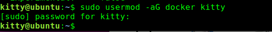
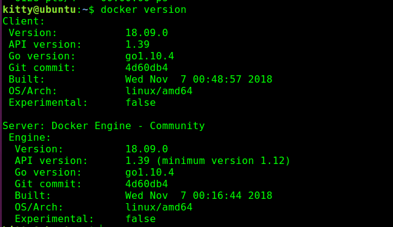
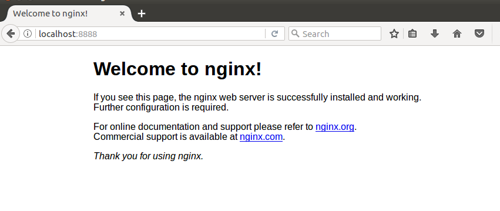

1、前提条件 本博客基于ubuntu
Docker 要求 Ubuntu 系统的内核版本高于 3.10 ，查看本页面的前提条件来验证你的 Ubuntu 版本是否支持 Docker。
通过 uname -r 命令查看你当前的内核版本
1 | runoob@runoob:~$ uname -r |

2、安装 Docker
2.1、获取最新版本的 Docker 安装包
1 | runoob@runoob:~$ wget -qO- https://get.docker.com/ | sh |

输入当前用户的密码后，就会下载脚本并且安装Docker及依赖包。
安装完成后有个提示：
1 | If you would like to use Docker as a non-root user, you should now consider |
2.2、速度很慢怎么慢
修改/etc/docker/daemon.json 文件为
1 | {"registry-mirrors": ["http://4e70ba5d.m.daocloud.io"]} |
或者直接用下面脚本跑（真香，ID可以自己在daocloud配
1 | root@ubuntu:~# curl -sSL https://get.daocloud.io/daotools/set_mirror.sh | sh -s http://4e70ba5d.m.daocloud.io |
然后重启
1 | root@ubuntu:~# service docker restart |
2.3、无法获得锁 /var/lib/apt/lists/lock - open (11: 资源暂时不可用)
出现这个问题的原因可能是有另外一个程序正在运行，导致资源被锁不可用。而导致资源被锁的原因，可能是上次安装时没正常完成，而导致出现此状况。
有两种方法
1、通过删除文件（实测方法2友好一些
1 | sudo rm /var/cache/apt/archives/lock |
2、通过ps查看apt-get的PID 然后sudo kill 就可以
3、然后就是基本命令
3、1:添加用户组
默认来说docker只能sudo运行为了下次方便使用，可以添加用户到docker用户组
1 | sudo usermod -aG docker ${USER} |

然后下次登陆即可非root使用docker
3、2:查看Docker版本信息
1 | docker version |

3、3: 查看本地镜像
1 | docker images |

3、4：容器从哪里来
开始如果你什么镜像都没有，你想要一个ubuntu的镜像可以直接下载
1 | kitty@ubuntu:~$ docker pull ubuntu |
比如你要一个nginx镜像
然后你就可以使用docker images 查看安装了哪些
3、5：普通运行
docker run --name hellow11scan -d -p 9999:8000 boyhack/w11scandocker run -t -i ubuntu /bin/bash命令指定使用镜像ubuntu来启动一个容器 其中要保证ubuntu是images中已经存在的镜像
-it 表示运行在交互模式，是-i -t的缩写，即-it是两个参数：-i和-t。前者表示打开并保持stdout，后者表示分配一个终端（pseudo-tty）一般这个模式就是可以启动bash，然后和容器有命令行的交互
3、6：查看当前正在运行的容器：
1 | ~$ docker ps |

其中加上-a 表示查看所有的容器，包括已经停了的
3、7：启动、停止、重启容器
1 | ~$ docker start aa97ba3292ce |
和容器有关的一般是容器的ID
3、8： 删除镜像或者容器
1 | ~$ docker rm container_id |
如果遇到了问题比如占用等加上参数 -f 一梭子下去就完事了（docker rm -f container_id
3、9：进入shell
1 | docker exec -it 775c7c9ee1e1 /bin/bash |
3.10、文件处理
从容器到本地：
1 | docker cp 96f7f14e99ab:/www /tmp/ |
从本地到容器：
1 | docker cp /www/runoob 96f7f14e99ab:/www/ |
4、跑一个nginx当demo玩玩
4.1、安装nginx
1 | kitty@ubuntu:~$ docker pull nginx |
4.2、通过docker images确认安装后运行一下

其中–name 后面接的是images名也就是 REPOSITORY对应的东西
-p后面的第一个8888是本地端口，80是nginx的端口，意思是将nginx端口映射到本地,现在可以访问本地8888端口

4.3、使用自写的界面
先本地随便写一个index.html 然后当运行一个容器的时候，将该html替换进容器的index.html了
至于文件目录问题就要我们自己了解了 53be82f8c182这个东西是容器的ID
然后访问
当然这个只是在容器中修改如果要完全保存起来，你需要学commit等操作形成新的镜像，本篇文章旨在入门，所以其他的希望看到本博客的能去自学，坚持下去，就是大佬了Orz。
最后附上一张高大上的Docker命令图,望君笑纳

搭建freshrss
1 | docker run -dit --restart unless-stopped --log-opt max-size=10m \ |